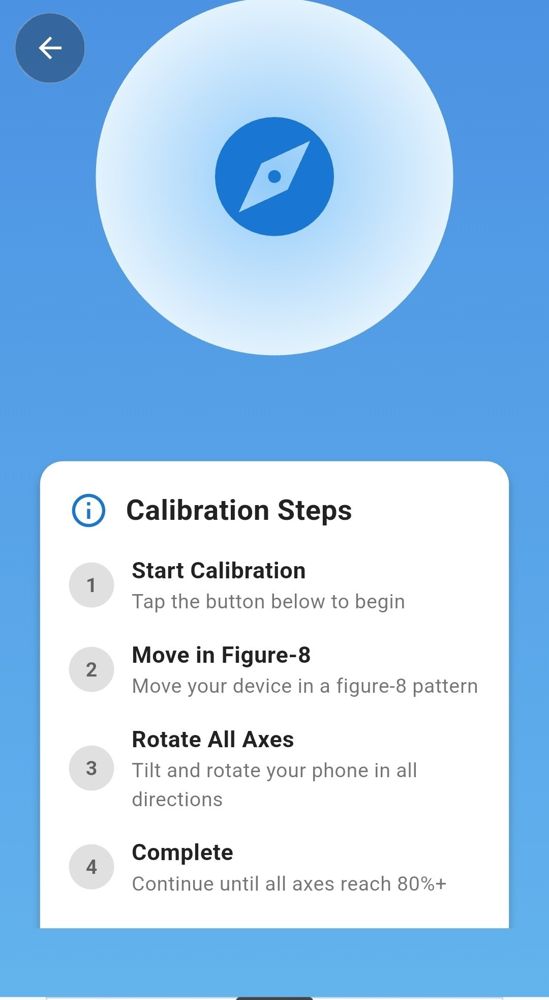

A trustworthy heading starts with calibration
Phone magnetometers drift. Compass Pro's guided calibration gets every dial theme reading true in under thirty seconds.
-

Step 01 · StartTap to start calibration
One tap opens the calibration screen with a live walkthrough of exactly what to do next — no manual required.
-
Step 02 · Figure-8
Move in a figure-8
A slow figure-8 motion exposes the magnetometer to every axis, clearing out magnetic bias picked up from your case, mount, or pocket.
-
Step 03 · Rotate
Rotate through all axes
Tilt and turn your phone through pitch, roll and yaw. A live progress read tells you exactly how each axis is tracking.
-
Step 04 · Complete
Hit 80%+ on every axis
Once each axis clears the threshold, calibration locks in automatically and your dial snaps to a verified true heading.
Everything a real compass needs, nothing it doesn't
True magnetometer compass
Reads your device's real magnetic sensor — not a simulated needle — for a heading you can actually trust outdoors.
Six dial themes
Nebula, Midnight, Tactical, Deep Space, Classic and Aviator — swap looks instantly from the Background menu.
GPS coordinates, two formats
Decimal degrees and degrees-minutes-seconds side by side, plus altitude and live accuracy in metres.
Built-in weather
Temperature, condition, wind, humidity, precipitation and sunrise/sunset, fused right into the compass screen.
Saved location history
Bookmark any fix with its coordinates and bearing, then revisit or navigate back to it from the Saved tab.
Guided calibration
A figure-8 walkthrough with live per-axis progress, so you know your heading is verified, not guessed.
Day & Night modes
A dedicated low-light mode keeps the dial readable without ruining your night vision on the trail.
Configurable readouts
Choose exactly which stats — accuracy, altitude, bearing — show beneath the dial. Keep it minimal or keep it full.
Works fully offline
The compass dial, calibration and saved places all work with no signal at all — weather syncs back up once you're connected.
One compass, every direction you travel
From a weekend trail to a flight deck, Compass Pro's themes and readouts adapt to how you actually navigate.
- Hiking & backpacking
- Sailing & boating
- Aviation & flight planning
- Camping & off-grid travel
- Geocaching
- Surveying & fieldwork
- Astronomy & stargazing
- Everyday city navigation
Frequently asked questions
Does Compass Pro use my phone's real compass sensor?
Yes. Compass Pro reads your device's magnetometer directly for a true live heading, not a simulated or GPS-estimated one.
Can I change how the compass looks?
Yes — choose from six dial themes (Nebula, Midnight, Tactical, Deep Space, Classic and Aviator) and several live backgrounds from the Background menu, and toggle Day or Night mode any time.
Can I hide or show specific stats on the compass screen?
Yes. Accuracy, altitude and bearing readouts beneath the dial can each be shown or hidden, so you can keep the face as minimal or as detailed as you like.
Does Compass Pro show weather?
Every theme carries a live weather strip — temperature, condition and wind — above the dial. The full Weather screen adds humidity, precipitation, wind direction and sunrise/sunset times for your exact location.
Can I save locations and find them again later?
Yes. Bookmark any position from the compass or location screen, and revisit your full location history any time from the Saved tab.
What coordinate formats does it support?
The Location screen shows both Decimal Degrees (DD) and Degrees-Minutes-Seconds (DMS) side by side, along with altitude and live GPS accuracy.
Why do I need to calibrate the compass?
Phone magnetometers pick up interference from cases, mounts, and magnets over time. A quick figure-8 calibration clears that bias so your heading stays accurate.
Does Compass Pro work without an internet connection?
Yes. The compass dial, calibration, and saved places all work fully offline. Live weather data will sync again once you reconnect.
Your next bearing is one tap away.
Calibrate once, pick a theme that fits, and carry a navigation instrument that works whether or not the signal does.
GET IT ON Google PlayFREE DOWNLOAD · WORKS OFFLINE · NO ACCOUNT REQUIRED